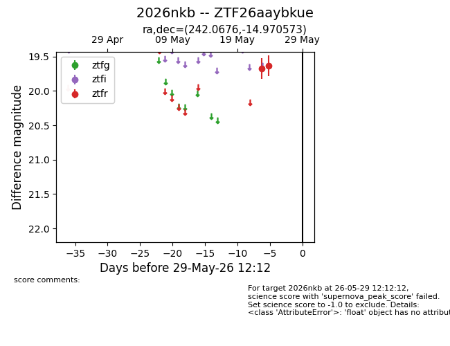
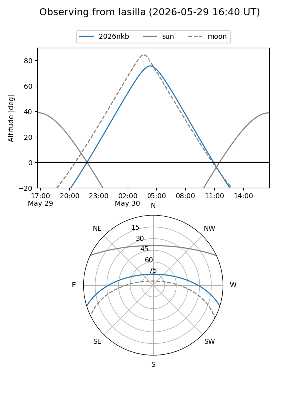
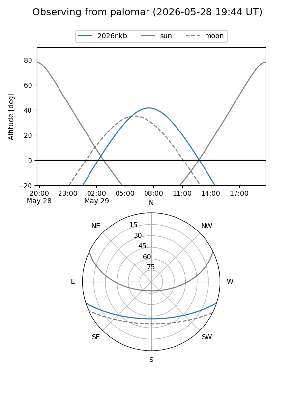

2026nkb
Target 2026nkb at 2026-05-29 12:16
Aliases and brokers:
lsst-FINK: link
lsst-Lasair: link
lsst-ALeRCE: link
ztf-FINK: link
ztf-Lasair: link
ztf-ALeRCE: link
TNS: link
YSE: link
alt names
ZTF26aaybkue (ztf,fink_ztf)
2026nkb (tns,yse)
Coordinates:
equatorial (ra, dec) = 242.0676,-14.97057
equatorial (HMS+DMS) = 16:08:16.23,-14:58:14.06
galactic (l, b) = (357.6403,+26.35391)
Flags:
TNS confirmed: nan
Photometry:
last ztfr=19.63
2 ztfr detections
Lightcurve

Visibility


Additional plots